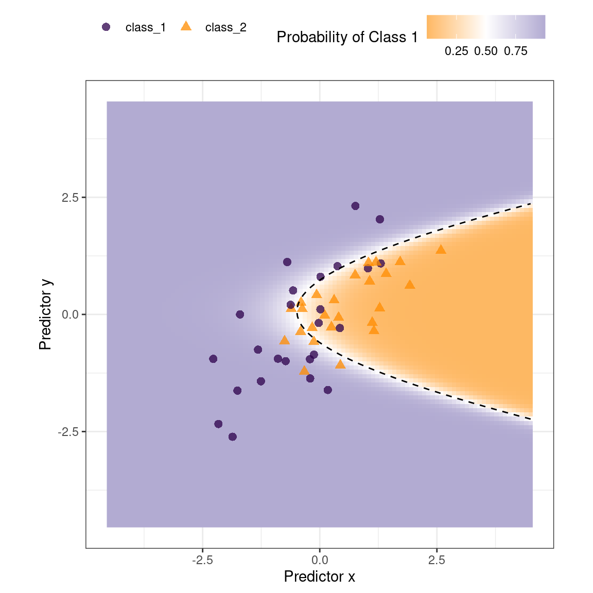
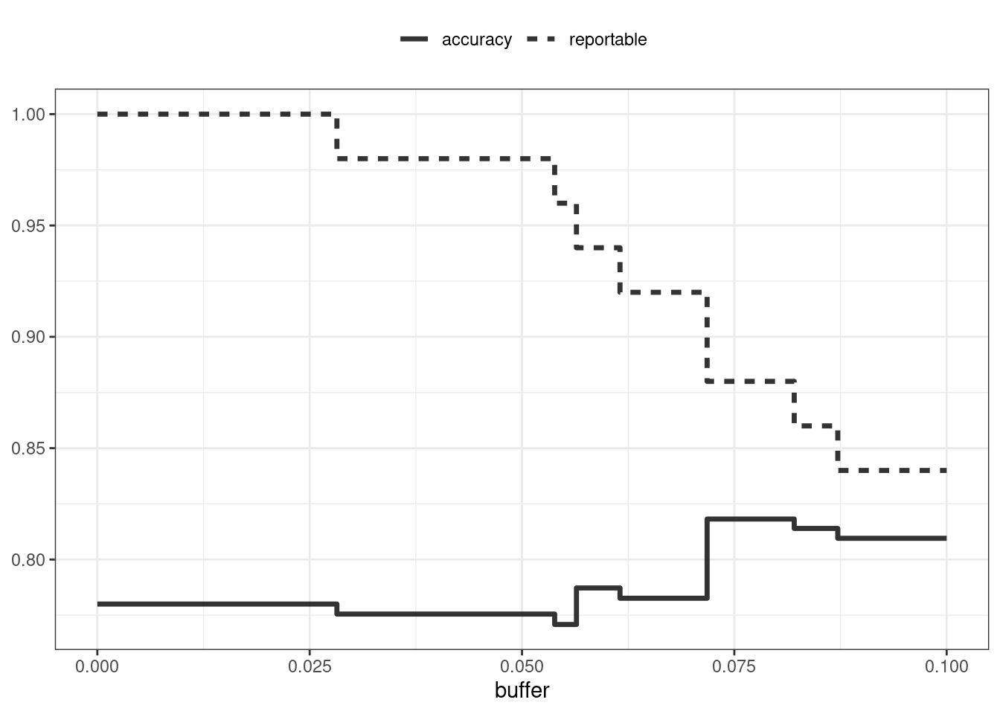
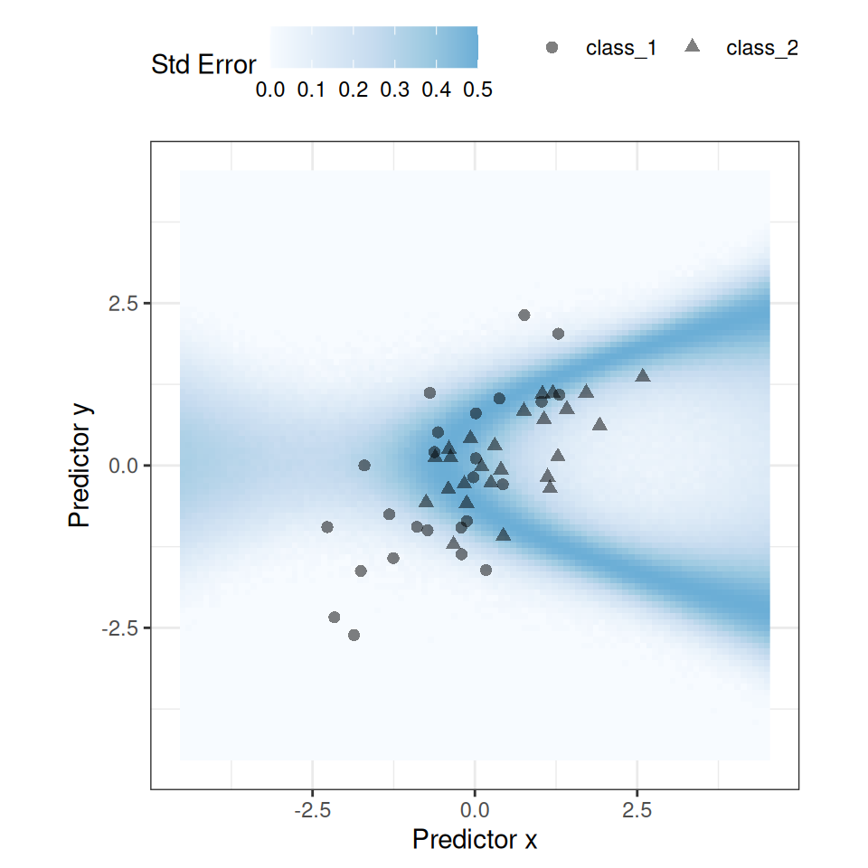
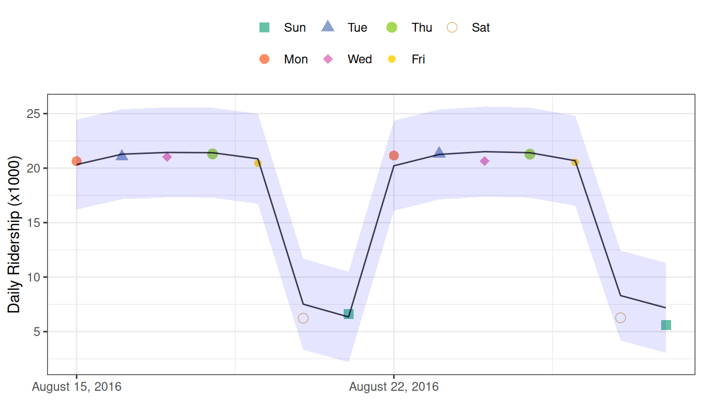
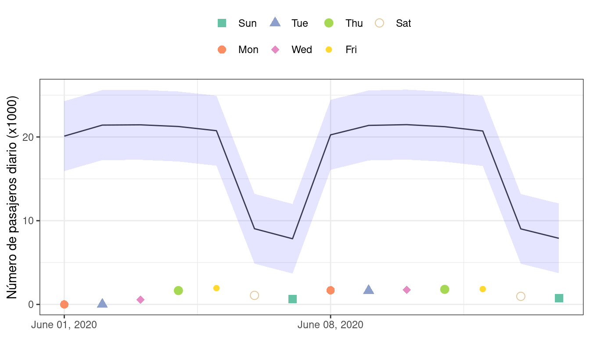
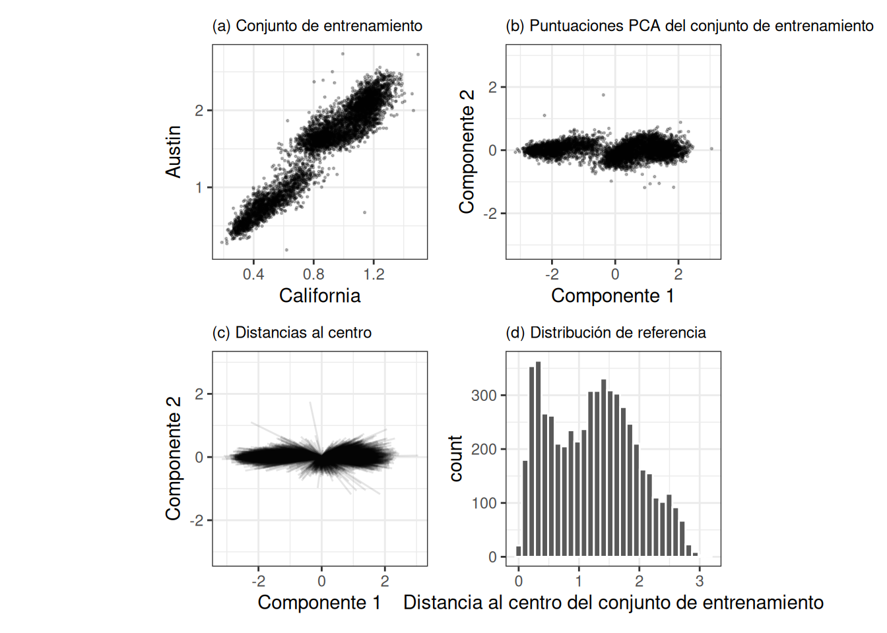
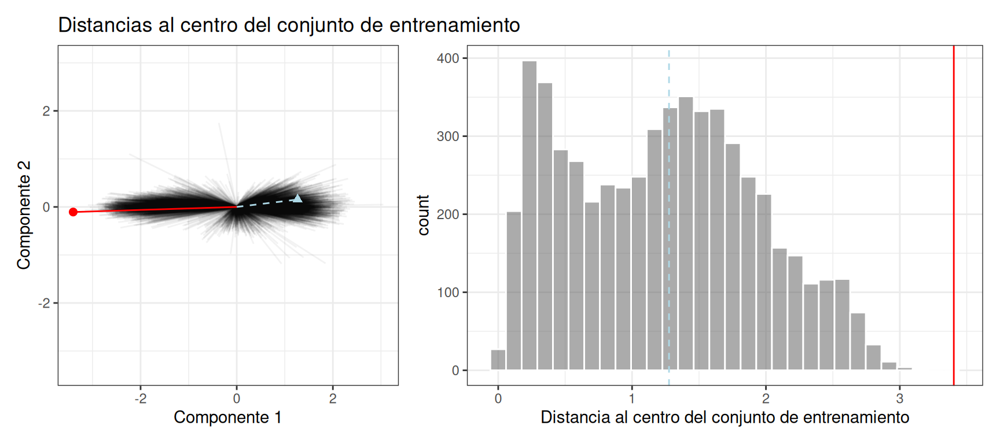
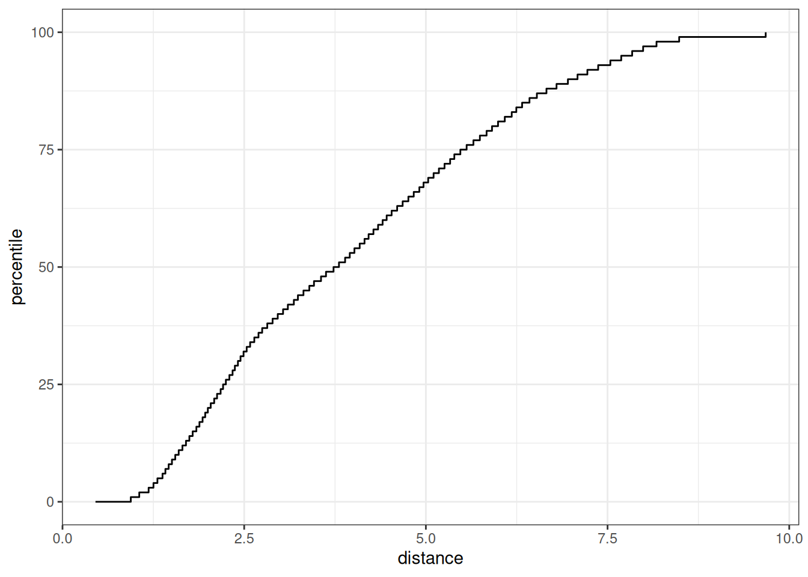

library(tidymodels)
tidymodels_prefer()
simulate_two_classes <-
function (n, error = 0.1, eqn = quote(-1 - 2 * x - 0.2 * x^2 + 2 * y^2)) {
# Predictores ligeramente correlacionados
sigma <- matrix(c(1, 0.7, 0.7, 1), nrow = 2, ncol = 2)
dat <- MASS::mvrnorm(n = n, mu = c(0, 0), Sigma = sigma)
colnames(dat) <- c("x", "y")
cls <- paste0("class_", 1:2)
dat <-
as_tibble(dat) %>%
mutate(
linear_pred = !!eqn,
# Agregue algo de ruido de clasificación errónea
linear_pred = linear_pred + rnorm(n, sd = error),
prob = binomial()$linkinv(linear_pred),
class = ifelse(prob > runif(n), cls[1], cls[2]),
class = factor(class, levels = cls)
)
dplyr::select(dat, x, y, class)
}
set.seed(1901)
training_set <- simulate_two_classes(200)
testing_set <- simulate_two_classes(50)19 ¿Cuándo Debería Confiar En Sus Predicciones?
Un modelo predictivo casi siempre puede producir una predicción, dados los datos de entrada. Sin embargo, en muchas situaciones resulta inapropiado realizar tal predicción. Cuando un nuevo punto de datos está muy fuera del rango de datos utilizados para crear el modelo, hacer una predicción puede ser una extrapolación inapropiada. Un ejemplo más cualitativo de una predicción inapropiada sería cuando el modelo se utiliza en un contexto completamente diferente. Los datos de segmentación celular utilizados en el Capítulo 14 indican cuándo las células de cáncer de mama humano pueden o no aislarse con precisión dentro de una imagen. Un modelo construido a partir de estos datos podría aplicarse de manera inapropiada a las células del estómago con el mismo propósito. Podemos producir una predicción, pero es poco probable que sea aplicable a los diferentes tipos de células.
Este capítulo analiza dos métodos para cuantificar la calidad potencial de una predicción:
- Las zonas equívocas utilizan los valores previstos para alertar al usuario de que los resultados pueden ser sospechosos.
- Aplicabilidad utiliza los predictores para medir la cantidad de extrapolación (si la hay) para nuevas muestras.
19.1 Resultados Equívocos
En algunos casos, la cantidad de incertidumbre asociada con una predicción es demasiado alta para confiar en ella.
Si el resultado de un modelo indicara que usted tenía un 51% de posibilidades de haber contraído COVID-19, sería natural ver el diagnóstico con cierto escepticismo. De hecho, los organismos reguladores suelen exigir que muchos diagnósticos médicos tengan una zona equívoca. Esta zona es un rango de resultados en los que la predicción no debe informarse a los pacientes, por ejemplo, algún rango de resultados de pruebas de COVID-19 que son demasiado inciertos para informarse a un paciente. Consulte Danowski et al. (1970) y Kerleguer et al. (2003) para ver ejemplos. La misma noción se puede aplicar a modelos creados fuera del diagnóstico médico.
Usemos una función que pueda simular datos de clasificación con dos clases y dos predictores (x e y). El verdadero modelo es un modelo de regresión logística con la ecuación:
\[ \mathrm{logit}(p) = -1 - 2x - \frac{x^2}{5} + 2y^2 \]
Los dos predictores siguen una distribución normal bivariada con una correlación de 0,70. Crearemos un conjunto de entrenamiento de 200 muestras y un conjunto de prueba de 50:
Estimamos un modelo de regresión logística utilizando métodos bayesianos (utilizando las distribuciones previas gaussianas predeterminadas para los parámetros):
two_class_mod <-
logistic_reg() %>%
set_engine("stan", seed = 1902) %>%
fit(class ~ . + I(x^2)+ I(y^2), data = training_set)
print(two_class_mod, digits = 3)
## parsnip model object
##
## stan_glm
## family: binomial [logit]
## formula: class ~ . + I(x^2) + I(y^2)
## observations: 200
## predictors: 5
## ------
## Median MAD_SD
## (Intercept) 1.092 0.287
## x 2.290 0.423
## y 0.314 0.354
## I(x^2) 0.077 0.307
## I(y^2) -2.465 0.424
##
## ------
## * For help interpreting the printed output see ?print.stanreg
## * For info on the priors used see ?prior_summary.stanregEl límite de clase ajustado se superpone al conjunto de prueba en Figura 19.1. Los puntos de datos más cercanos al límite de clase son los más inciertos. Si sus valores cambiaran ligeramente, su clase prevista podría cambiar. Un método simple para descalificar algunos resultados es llamarlos “equívocos” si los valores están dentro de algún rango alrededor del 50% (o el límite de probabilidad apropiado para una situación determinada). Dependiendo del problema al que se aplique el modelo, esto podría indicar que debemos recopilar otra medición o que necesitamos más información antes de que sea posible una predicción confiable.

Podríamos basar el ancho de la banda alrededor del límite en cómo mejora el rendimiento cuando se eliminan los resultados inciertos. Sin embargo, también debemos estimar la tasa reportable (la proporción esperada de resultados utilizables). Por ejemplo, no sería útil en situaciones del mundo real tener un rendimiento perfecto pero publicar predicciones en solo el 2% de las muestras pasadas al modelo.
Utilicemos el conjunto de pruebas para determinar el equilibrio entre mejorar el rendimiento y tener suficientes resultados reportables. Las predicciones se crean usando:
test_pred <- augment(two_class_mod, testing_set)
test_pred %>% head()
## # A tibble: 6 × 6
## .pred_class .pred_class_1 .pred_class_2 x y class
## <fct> <dbl> <dbl> <dbl> <dbl> <fct>
## 1 class_2 0.0256 0.974 1.12 -0.176 class_2
## 2 class_1 0.555 0.445 -0.126 -0.582 class_2
## 3 class_2 0.00620 0.994 1.92 0.615 class_2
## 4 class_2 0.472 0.528 -0.400 0.252 class_2
## 5 class_2 0.163 0.837 1.30 1.09 class_1
## 6 class_2 0.0317 0.968 2.59 1.36 class_2Con tidymodels, el paquete probably contiene funciones para zonas equívocas. Para casos con dos clases, la función make_two_class_pred() crea una columna similar a un factor que tiene las clases predichas con una zona equívoca:
library(probably)
lvls <- levels(training_set$class)
test_pred <-
test_pred %>%
mutate(.pred_with_eqz = make_two_class_pred(.pred_class_1, lvls, buffer = 0.15))
test_pred %>% count(.pred_with_eqz)
## # A tibble: 3 × 2
## .pred_with_eqz n
## <clss_prd> <int>
## 1 [EQ] 9
## 2 class_1 20
## 3 class_2 21Rows that are within \(0.50\pm0.15\) are given a value of [EQ].
La notación [EQ] en este ejemplo no es un nivel de factor sino un atributo de esa columna.
Dado que los niveles de los factores son los mismos que los de los datos originales, las matrices de confusión y otras estadísticas se pueden calcular sin errores. Cuando se utilizan funciones estándar del paquete yardstick, los resultados equívocos se convierten a NA y no se utilizan en los cálculos que utilizan predicciones de clases estrictas. Observe las diferencias en estas matrices de confusión:
# Toda la información
test_pred %>% conf_mat(class, .pred_class)
## Truth
## Prediction class_1 class_2
## class_1 20 6
## class_2 5 19
# Sólo resultados reportables:
test_pred %>% conf_mat(class, .pred_with_eqz)
## Truth
## Prediction class_1 class_2
## class_1 17 3
## class_2 5 16También está disponible una función is_equivocal() para filtrar estas filas de los datos.
¿La zona equívoca ayuda a mejorar la precisión? Veamos diferentes tamaños de búfer, como se muestra en Figura 19.2:
# Una función para cambiar el búfer y luego calcular el rendimiento.
eq_zone_results <- function(buffer) {
test_pred <-
test_pred %>%
mutate(.pred_with_eqz = make_two_class_pred(.pred_class_1, lvls, buffer = buffer))
acc <- test_pred %>% accuracy(class, .pred_with_eqz)
rep_rate <- reportable_rate(test_pred$.pred_with_eqz)
tibble(accuracy = acc$.estimate, reportable = rep_rate, buffer = buffer)
}
# Evaluar una secuencia de buffers y trazar los resultados.
map(seq(0, .1, length.out = 40), eq_zone_results) %>%
list_rbind() %>%
pivot_longer(c(-buffer), names_to = "statistic", values_to = "value") %>%
ggplot(aes(x = buffer, y = value, lty = statistic)) +
geom_step(linewidth = 1.2, alpha = 0.8) +
labs(y = NULL, lty = NULL)

Figura 19.2 nos muestra que la precisión mejora en unos pocos puntos porcentuales, ¡pero a costa de que casi el 10% de las predicciones sean inutilizables! El valor de tal compromiso depende de cómo se utilizarán las predicciones del modelo.
Este análisis se centró en utilizar la probabilidad de clase prevista para descalificar puntos, ya que esta es una medida fundamental de incertidumbre en los modelos de clasificación. Un enfoque ligeramente mejor sería utilizar el error estándar de la probabilidad de clase. Dado que utilizamos un modelo bayesiano, las estimaciones de probabilidad que encontramos son en realidad la media de la distribución predictiva posterior. En otras palabras, el modelo bayesiano nos da una distribución para la probabilidad de clase. Medir la desviación estándar de esta distribución nos da un error estándar de predicción de la probabilidad. En la mayoría de los casos, este valor está directamente relacionado con la probabilidad de clase media. Quizás recuerdes que, para una variable aleatoria de Bernoulli con probabilidad \(p\), la varianza es \(p(1-p)\). Debido a esta relación, el error estándar es mayor cuando la probabilidad es del 50%. En lugar de asignar un resultado equívoco utilizando la probabilidad de clase, podríamos utilizar un límite en el error estándar de predicción.
Un aspecto importante del error estándar de predicción es que tiene en cuenta algo más que la probabilidad de clase. En los casos en los que hay una extrapolación significativa o valores predictivos aberrantes, el error estándar podría aumentar. El beneficio de utilizar el error estándar de predicción es que también podría señalar predicciones que son problemáticas (en lugar de simplemente inciertas). Una razón por la que utilizamos el modelo bayesiano es que estima naturalmente el error estándar de predicción; No muchos modelos pueden calcular esto. Para nuestro conjunto de prueba, usar type = "pred_int" producirá límites superior e inferior y std_error agrega una columna para esa cantidad. Para intervalos del 80%:
test_pred <-
test_pred %>%
bind_cols(
predict(two_class_mod, testing_set, type = "pred_int", std_error = TRUE)
)Para nuestro ejemplo donde el modelo y los datos se comportan bien, Figura 19.3 muestra el error estándar de predicción en todo el espacio:

El uso del error estándar como medida para evitar que se predigan muestras también se puede aplicar a modelos con resultados numéricos. Sin embargo, como se muestra en la siguiente sección, es posible que esto no siempre funcione.
19.2 Determinación De La Aplicabilidad Del Modelo
Las zonas equívocas intentan medir la confiabilidad de una predicción basada en los resultados del modelo. Puede ser que las estadísticas del modelo, como el error estándar de predicción, no puedan medir el impacto de la extrapolación, por lo que necesitamos otra forma de evaluar si debemos confiar en una predicción y responder: “¿Es nuestro modelo aplicable para predecir un punto de datos específico?” Tomemos los datos del tren de Chicago utilizados ampliamente en Kuhn y Johnson (2019) y mostrados por primera vez en Sección 2.2 . El objetivo es predecir la cantidad de clientes que ingresan a la estación de tren de Clark y Lake cada día.
El conjunto de datos en el paquete modeldata (un paquete tidymodels con conjuntos de datos de ejemplo) tiene valores diarios entre January 22, 2001 y formato r(max(Chicago$fecha), "%B %d, %Y"). Creemos un pequeño conjunto de pruebas utilizando las últimas dos semanas de datos:
## loads tanto el conjunto de datos de "Chicago" como las "estaciones"
data(Chicago)
Chicago <- Chicago %>% select(ridership, date, one_of(stations))
n <- nrow(Chicago)
Chicago_train <- Chicago %>% slice(1:(n - 14))
Chicago_test <- Chicago %>% slice((n - 13):n)Los principales predictores son los datos retrasados sobre el número de pasajeros en diferentes estaciones de tren, incluidas Clark y Lake, así como la fecha. Los predictores de número de pasajeros están altamente correlacionados entre sí. En la siguiente receta, la columna de fecha se amplía con varias características nuevas y los predictores de número de pasajeros se representan mediante componentes de mínimos cuadrados parciales (PLS). PLS (Geladi y Kowalski 1986), como comentamos en Sección 16.5.2, es una versión supervisada del análisis de componentes principales donde las nuevas características han sido descorrelacionadas pero predicen los datos de resultado.
Utilizando los datos preprocesados, ajustamos un modelo lineal estándar:
base_recipe <-
recipe(ridership ~ ., data = Chicago_train) %>%
# Crear funciones de fecha
step_date(date) %>%
step_holiday(date, keep_original_cols = FALSE) %>%
# Crear variables ficticias a partir de columnas de factores
step_dummy(all_nominal()) %>%
# Elimine cualquier columna con un único valor único
step_zv(all_predictors()) %>%
step_normalize(!!!stations)%>%
step_pls(!!!stations, num_comp = 10, outcome = vars(ridership))
lm_spec <-
linear_reg() %>%
set_engine("lm")
lm_wflow <-
workflow() %>%
add_recipe(base_recipe) %>%
add_model(lm_spec)
set.seed(1902)
lm_fit <- fit(lm_wflow, data = Chicago_train)¿Qué tan bien encajan los datos en el conjunto de prueba? Podemos predecit() para que el conjunto de pruebas encuentre tanto predicciones como intervalos de predicción:
res_test <-
predict(lm_fit, Chicago_test) %>%
bind_cols(
predict(lm_fit, Chicago_test, type = "pred_int"),
Chicago_test
)
res_test %>% select(date, ridership, starts_with(".pred"))
## # A tibble: 14 × 5
## date ridership .pred .pred_lower .pred_upper
## <date> <dbl> <dbl> <dbl> <dbl>
## 1 2016-08-15 20.6 20.3 16.2 24.5
## 2 2016-08-16 21.0 21.3 17.1 25.4
## 3 2016-08-17 21.0 21.4 17.3 25.6
## 4 2016-08-18 21.3 21.4 17.3 25.5
## 5 2016-08-19 20.4 20.9 16.7 25.0
## 6 2016-08-20 6.22 7.52 3.34 11.7
## # ℹ 8 more rows
res_test %>% rmse(ridership, .pred)
## # A tibble: 1 × 3
## .metric .estimator .estimate
## <chr> <chr> <dbl>
## 1 rmse standard 0.865Estos son resultados bastante buenos. Figura 19.4 visualiza las predicciones junto con intervalos de predicción del 95%.

Dada la escala del número de usuarios, estos resultados parecen particularmente buenos para un modelo tan simple. Si se hubiera implementado este modelo, ¿qué tan bien habría funcionado unos años más tarde, en junio de 2020? El modelo realiza con éxito una predicción, como casi siempre lo hace un modelo predictivo cuando se le dan datos de entrada:
res_2020 <-
predict(lm_fit, Chicago_2020) %>%
bind_cols(
predict(lm_fit, Chicago_2020, type = "pred_int"),
Chicago_2020
)
res_2020 %>% select(date, contains(".pred"))
## # A tibble: 14 × 4
## date .pred .pred_lower .pred_upper
## <date> <dbl> <dbl> <dbl>
## 1 2020-06-01 20.1 15.9 24.3
## 2 2020-06-02 21.4 17.2 25.6
## 3 2020-06-03 21.5 17.3 25.6
## 4 2020-06-04 21.3 17.1 25.4
## 5 2020-06-05 20.7 16.6 24.9
## 6 2020-06-06 9.04 4.88 13.2
## # ℹ 8 more rowsLos intervalos de predicción tienen aproximadamente el mismo ancho, aunque estos datos están mucho más allá del período de tiempo del conjunto de entrenamiento original. Sin embargo, dada la pandemia mundial en 2020, el desempeño según estos datos es pésimo:
res_2020 %>% select(date, ridership, starts_with(".pred"))
## # A tibble: 14 × 5
## date ridership .pred .pred_lower .pred_upper
## <date> <dbl> <dbl> <dbl> <dbl>
## 1 2020-06-01 0.002 20.1 15.9 24.3
## 2 2020-06-02 0.005 21.4 17.2 25.6
## 3 2020-06-03 0.566 21.5 17.3 25.6
## 4 2020-06-04 1.66 21.3 17.1 25.4
## 5 2020-06-05 1.95 20.7 16.6 24.9
## 6 2020-06-06 1.08 9.04 4.88 13.2
## # ℹ 8 more rows
res_2020 %>% rmse(ridership, .pred)
## # A tibble: 1 × 3
## .metric .estimator .estimate
## <chr> <chr> <dbl>
## 1 rmse standard 17.2Puedes ver visualmente el terrible rendimiento de este modelo en Figura 19.5.

Los intervalos de confianza y predicción para la regresión lineal se expanden a medida que los datos se alejan cada vez más del centro del conjunto de entrenamiento. Sin embargo, ese efecto no es lo suficientemente dramático como para señalar que estas predicciones son deficientes.
A veces las estadísticas producidas por los modelos no miden muy bien la calidad de las predicciones.
Esta situación se puede evitar teniendo una metodología secundaria que pueda cuantificar qué tan aplicable es el modelo para cualquier nueva predicción (es decir, el dominio de aplicabilidad del modelo). Existe una variedad de métodos para calcular un modelo de dominio de aplicabilidad, como Jaworska, Nikolova-Jeliazkova, y Aldenberg (2005) o Netzeva et al. (2005). El enfoque utilizado en este capítulo es un método no supervisado bastante simple que intenta medir cuánto (si lo hay) un nuevo punto de datos está más allá de los datos de entrenamiento.1
La idea es acompañar una predicción con una puntuación que mida qué tan similar es el nuevo punto al conjunto de entrenamiento.
Un método que funciona bien utiliza el análisis de componentes principales (PCA) en los valores predictivos numéricos. Ilustraremos el proceso utilizando sólo dos de los predictores que corresponden al número de pasajeros en diferentes estaciones (estaciones de California y Austin). El conjunto de entrenamiento se muestra en el panel (a) en Figura 19.6. Los datos sobre el número de pasajeros de estas estaciones están altamente correlacionados y las dos distribuciones que se muestran en el diagrama de dispersión corresponden al número de pasajeros los fines de semana y días laborables.
El primer paso es realizar PCA con los datos de entrenamiento. Las puntuaciones de PCA para el conjunto de entrenamiento se muestran en el panel (b) en Figura 19.6. A continuación, utilizando estos resultados, medimos la distancia de cada punto de ajuste de entrenamiento al centro de los datos de PCA (panel (c) de Figura 19.6). Luego podemos usar esta distribución de referencia (panel (d) de Figura 19.6) para estimar qué tan lejos está un punto de datos de la corriente principal de los datos de entrenamiento.

Para una nueva muestra, las puntuaciones de PCA se calculan junto con la distancia al centro del conjunto de entrenamiento.
Sin embargo, ¿qué significa que una nueva muestra tenga una distancia de X? Dado que los componentes de PCA pueden tener diferentes rangos de un conjunto de datos a otro, no existe un límite obvio para decir que una distancia es demasiado grande.
Un enfoque es tratar las distancias de los datos del conjunto de entrenamiento como “normales”. Para muestras nuevas, podemos determinar cómo se compara la nueva distancia con el rango en la distribución de referencia (del conjunto de entrenamiento). Se puede calcular un percentil para nuevas muestras que refleje qué parte del conjunto de entrenamiento es menos extremo que las nuevas muestras.
Un percentil del 90% significa que la mayoría de los datos del conjunto de entrenamiento están más cerca del centro de datos que la nueva muestra.
El gráfico en Figura 19.7 superpone una muestra del conjunto de prueba (triángulo y línea discontinua) y una muestra de 2020 (círculo y línea continua) con las distancias PCA del conjunto de entrenamiento.

El punto de ajuste de prueba tiene una distancia de 1.28. Está en el percentil 51.8% de la distribución del conjunto de entrenamiento, lo que indica que está cómodamente dentro de la corriente principal del conjunto de entrenamiento.
La muestra de 2020 está más alejada del centro que cualquiera de las muestras del conjunto de entrenamiento (con un percentil de 100%). Esto indica que la muestra es muy extrema y que su predicción correspondiente sería una extrapolación severa (y probablemente no debería informarse).
El paquete applicable puede desarrollar un modelo de dominio de aplicabilidad utilizando PCA. Usaremos los predictores de número de pasajeros de 20 estaciones retrasadas como datos de entrada para el análisis de PCA. Hay un argumento adicional llamado umbral, threshold, que determina cuántos componentes se utilizan en el cálculo de la distancia. Para nuestro ejemplo, usaremos un valor grande que indica que debemos usar suficientes componentes para representar el 99 % de la variación en los predictores de número de pasajeros:
library(applicable)
pca_stat <- apd_pca(~ ., data = Chicago_train %>% select(one_of(stations)),
threshold = 0.99)
pca_stat
## # Predictors:
## 20
## # Principal Components:
## 9 components were needed
## to capture at least 99% of the
## total variation in the predictors.El método autoplot() traza la distribución de referencia. Tiene un argumento opcional para qué datos trazar. Agregaremos un valor de distancia, distance para trazar solo la distribución de distancia del conjunto de entrenamiento. Este código genera la trama en Figura 19.8:
autoplot(pca_stat, distance) + labs(x = "distance")

autoplot() en un objeto aplicable
El eje x muestra los valores de la distancia y el eje y muestra los percentiles de la distribución. Por ejemplo, la mitad de las muestras del conjunto de entrenamiento tenían distancias menores que 3.7.
Para calcular los percentiles de datos nuevos, la función score() funciona de la misma manera que predict():
score(pca_stat, Chicago_test) %>% select(starts_with("distance"))
## # A tibble: 14 × 2
## distance distance_pctl
## <dbl> <dbl>
## 1 4.88 66.7
## 2 5.21 71.4
## 3 5.19 71.1
## 4 5.00 68.5
## 5 4.36 59.3
## 6 4.10 55.2
## # ℹ 8 more rowsEstos parecen bastante razonables. Para los datos de 2020:
score(pca_stat, Chicago_2020) %>% select(starts_with("distance"))
## # A tibble: 14 × 2
## distance distance_pctl
## <dbl> <dbl>
## 1 9.39 99.8
## 2 9.40 99.8
## 3 9.30 99.7
## 4 9.30 99.7
## 5 9.29 99.7
## 6 10.1 1
## # ℹ 8 more rowsLos valores de distancia de 2020 indican que estos valores predictivos están fuera de la gran mayoría de los datos vistos por el modelo en el momento del entrenamiento. Estos deben señalarse para que las predicciones no se informen en absoluto o se vean con escepticismo.
Un aspecto importante de este análisis se refiere a qué predictores se utilizan para desarrollar el modelo de dominio de aplicabilidad. En nuestro análisis, utilizamos las columnas predictoras sin procesar. Sin embargo, al construir el modelo, se utilizaron en su lugar características de puntuación PLS. ¿Cuál de estos debería usar apd_pca()? La función apd_pca() también puede tomar una receta como entrada (en lugar de una fórmula) para que las distancias reflejen las puntuaciones PLS en lugar de las columnas predictivas individuales. Puede evaluar ambos métodos para comprender cuál ofrece resultados más relevantes.
19.3 Resumen Del Capítulo
Este capítulo mostró dos métodos para evaluar si las predicciones deben informarse a los consumidores de modelos. Las zonas equívocas se ocupan de resultados/predicciones y pueden resultar útiles cuando la cantidad de incertidumbre en una predicción es demasiado grande.
Los modelos de dominio de aplicabilidad tratan con características/predictores y cuantifican la cantidad de extrapolación (si la hay) que ocurre al hacer una predicción. Este capítulo mostró un método básico que utiliza el análisis de componentes principales, aunque hay muchas otras formas de medir la aplicabilidad. El paquete applicable también contiene métodos especializados para conjuntos de datos donde todos los predictores son binarios. Este método calcula puntuaciones de similitud entre los puntos de datos del conjunto de entrenamiento para definir la distribución de referencia.